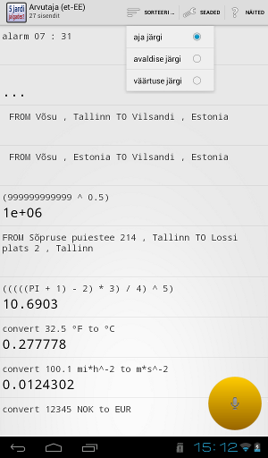

Arvutaja
|  |
/ärata mind kell seitse kolmkümmend üks/ /algus võsu lõpp vilsandi/ (NB: mitmene sisend) /üheksasada üheksakümmend üheksa miljardit üheksasada üheksakümmend üheksa miljonit üheksasada üheksakümmend üheksa tuhat üheksasada üheksakümmend üheksa astmel pool/ /algus sõpruse puiestee kakssada neliteist lõpp lossi plats kaks/ /Pii pluss üks miinus kaks korda kolm jagatud neli astmel viis/ /kolmkümmend kaks koma viis fahrenheiti kraadides/ /sada koma üks miili ruut tunnis meetrites ruut sekundis/ /kaksteist tuhat kolmsada nelikümmend viis norra krooni eurodes/ |
{kind=link}
Hetkel toetatud avaldised:
- aritmeetilised tehted arvudega vahemikus -1012 kuni 1012 (sh paljud komaga arvud), nelja põhitehte ja astendamisega;
- mõõtühikute teisendamine umbes 50 põhiühikuga;
- valuutade teisendamine umbes 15 valuutaga;
- Eesti aadresside päringud 6000 Eesti kohanimega (kõikide Eesti asulate nimed ning Tallinna ja Tartu tänavanimed);
- äratuskella/taimeri seadmine,
- telefoninumbri valimine.
Avaldiste sõnavara, süntaktilist struktuuri ja tähendust kirjeldab formaalselt Action-grammatika. Vt veel näiteid.
Veel dokumentatsiooni, lähtekood, tulevikuplaanid, allalaaditavad APK-failid Arvutaja projektilehelt GitHubis.